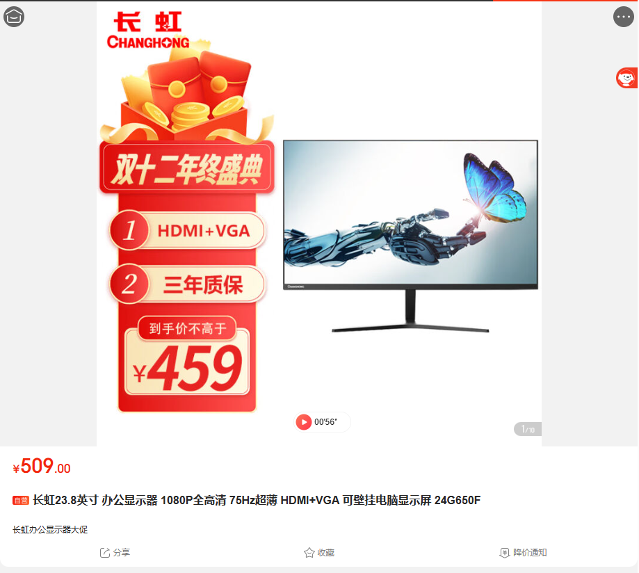
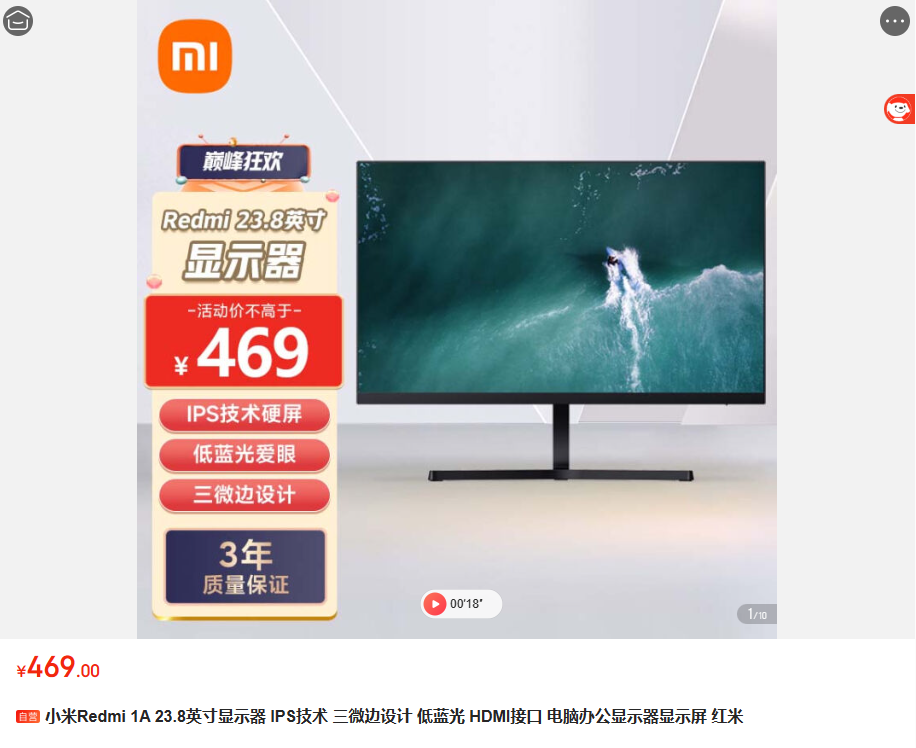
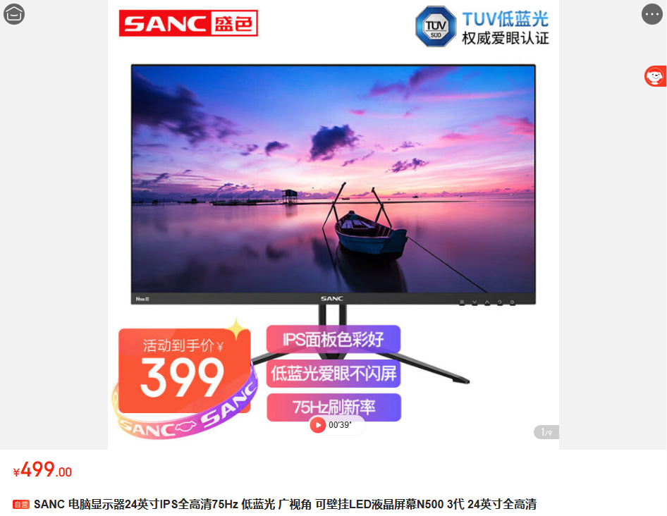
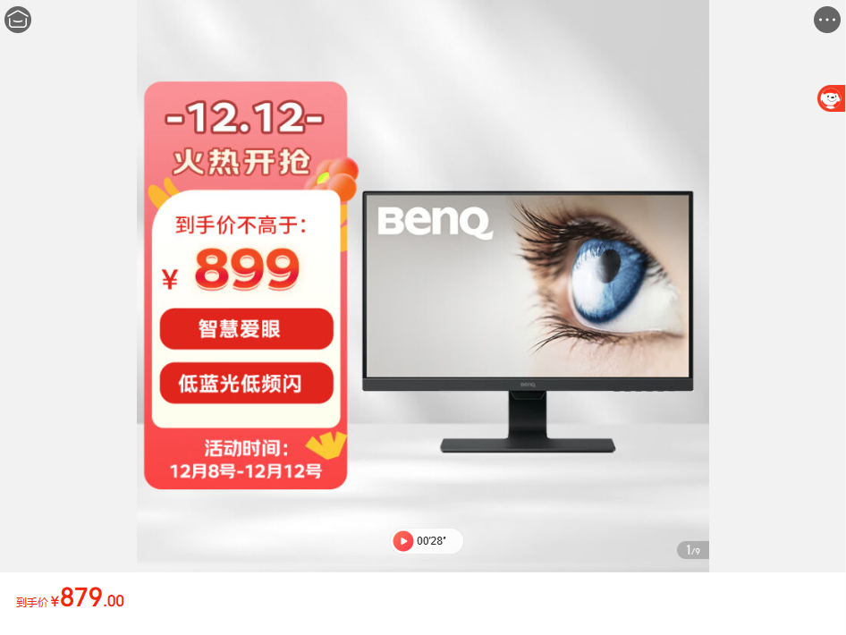
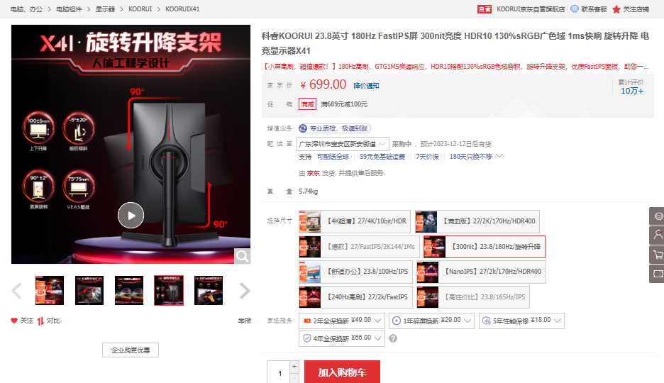
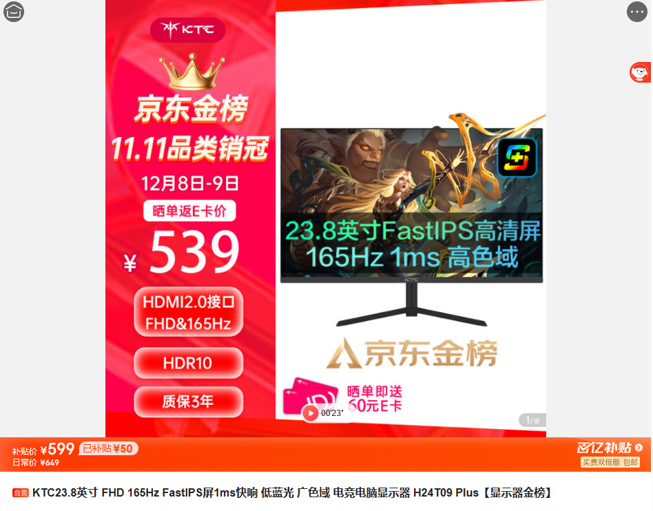

长虹 24G650F
- 面板材质: 未知
- 刷新率: 75hz
- 色域: 99%sRGB 72%NTSC
- 色深: 未知
- 色准: 未知
- 信号输出接口: VGA + HDMI
- 亮度: 300nit
- 尺寸: 23.8英寸
- 分辨率: 1920*1080
- 响应时间: 未知
- 支持壁挂

小米Redmi 1A
- 面板材质: IPS
- 刷新率: 75hz
- 色域: 72%NTSC
- 色深: 未知
- 色准: 未知
- 信号输出接口: VGA + HDMI
- 亮度: 未知
- 尺寸: 23.8英寸
- 分辨率: 1920*1080
- 响应时间: 6ms GTG
- 不支持壁挂

SANC N500
- 面板材质: IPS
- 刷新率: 75hz
- 色域: 98%sRGB
- 色深: 未知
- 色准: 未知
- 信号输出接口: VGA + HDMI
- 亮度: 250nit
- 尺寸: 24英寸
- 分辨率: 1920*1080
- 响应时间: 未知
- 支持壁挂

明基 GW2480
- 面板材质: IPS
- 刷新率: 未知
- 色域: 未知
- 色深: 8bit
- 色准: 未知
- 信号输出接口: VGA + HDMI + DP
- 亮度: 未知
- 尺寸: 23.8英寸
- 分辨率: 1920*1080
- 响应时间: 未知
- 支持壁挂

科睿X41
- 面板材质: Fast IPS
- 刷新率: 180hz
- 色域: 130%sRGB 90%DCI-P3
- 色深: 8bit
- 色准: 未知
- 信号输出接口: DP + HDMI*2
- 亮度: 300nit
- 尺寸: 23.8英寸
- 分辨率: 1920*1080
- 响应时间: 1ms
- 支持壁挂
- FreeSync && G-Sync

KTC H24T09
- 面板材质: Fast IPS
- 刷新率: 165hz
- 色域: 94%sRGB
- 色深: 8bit
- 色准: > 1
- 信号输出接口: DP*2 + HDMI*2
- 亮度: 270nit
- 尺寸: 23.8英寸
- 分辨率: 1920*1080
- 响应时间: 原生5ms GTG
- 支持壁挂
- FreeSync && G-Sync
tips: 数据来源，B站up主幻想边城Fancity，显示器参数大抵是准确的，所以相比其他会差点，其他的不保证准确且某些参数找不到
pipi: 知道的越多，不知道的就越多；比不了，比不了一点。总而言之，你只需要知道面板材质要IPS屏，色域99%sRGB最让人舒服，刷新率和亮度越高越好就好啦。挑选哪款，你来决定吧🎅